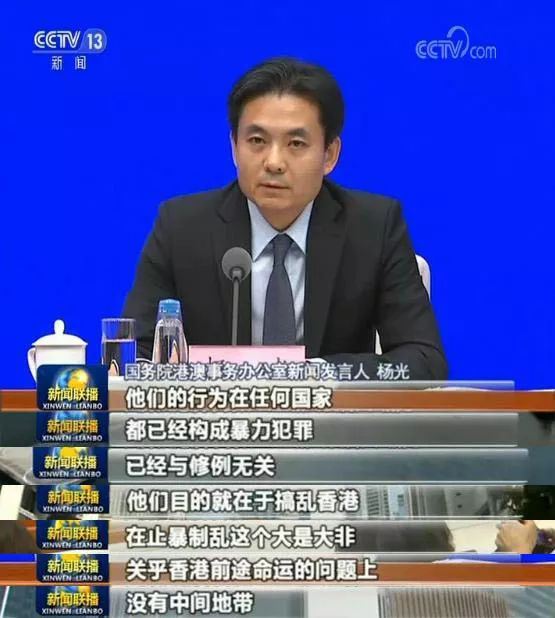
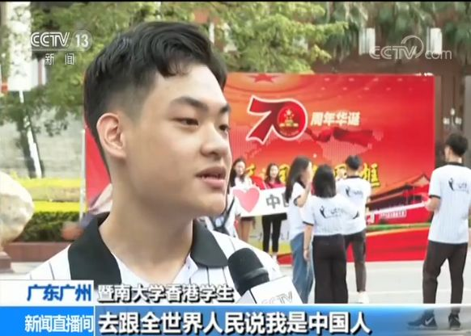
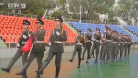

国务院港澳办就当前香港局势提出3点意见
林郑月娥：有信心带领香港走出困境
“我和国旗同框”活动校园行 港澳台侨学生告白祖国
6月9日至今，香港警方共拘捕1140人
国泰三航班机组人员全部停飞
国务院港澳事务办3日表示，香港局势目前正出现一些积极的变化，其中最为重要的 是“止暴制乱、恢复秩序”已成为香港社会各界最强烈的要求、最迫切的呼吁。 但香港局 势依然复杂严峻，违法活动仍然没有得到完全遏制。
国务院港澳事务办公室新闻发言人提出三点意见：第一，希望香港特区政府和社会各界 人士围绕“止暴制乱、恢复秩序”进一步凝聚共识并付诸行动。第二，希望大家把以和平游 行集会表达诉求的行动与暴力犯罪和挑战“一国两制”底线的行径区分开来。第三，希望大 家聚焦香港经济发展和民生改善的根本问题，献计献策，共谋解决之道。
香港9月3日举行抗日战争胜利74周年纪念仪式，全国政协副主席董建华、香港特区行 政长官林郑月娥、中央驻港机构代表、特区政府主要官员、香港司法界人士、行政会议成 员、立法会议员等出席了纪念仪式。林郑月娥在会见记者时表示，依然有信心带领香港走出 目前的困境，现在共同首要的目标是把暴力停下来，让香港社会早日恢复平静。
“我和国旗同框”活动校园行为庆祝新中国成立70周年，让更多青年学子表达自己的爱国之心，并且参与到护旗爱国 行动当中，由中央广播电视总台新闻新媒体中心主办的“我和国旗同框”活动校园行来到了 暨南大学和深圳大学。
暨南大学香港学生：不同意义在于我能够知道国旗的历史、发展，我们要怎么去保护国 旗。因为作为中国人的我们，我们需要去站在国旗这边，不让它受到任何伤害，我也希望自 己也能够像祖国一样，有一个好的进步。希望以后能够用我的声音、我的文字去跟全世界人 民说“我是中国人”
